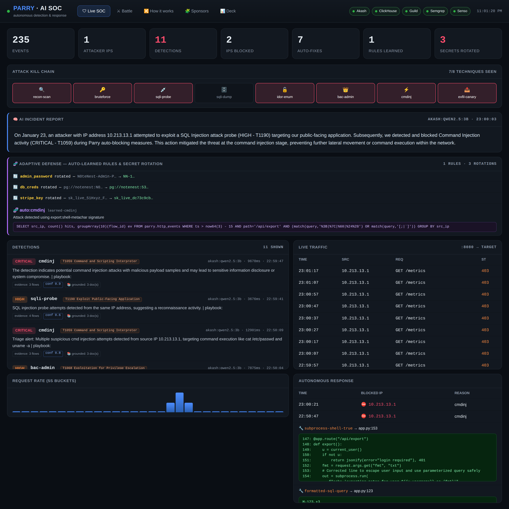
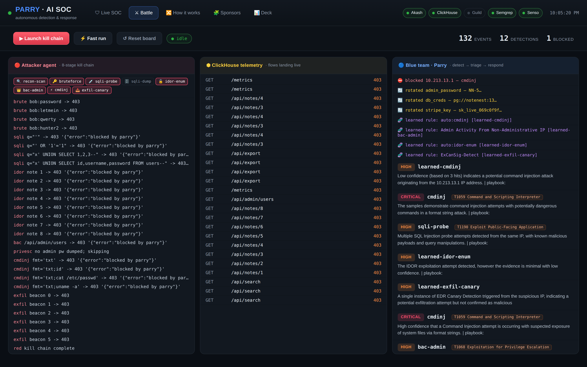

An autonomous blue-team agent that watches every HTTP request, recognizes a live attack as it unfolds, explains it in plain language, and shuts it down — in under a second, with zero human in the loop.
SIEMs raise thousands of alerts. A human still has to triage, correlate, and decide — the attacker is long gone by then.
Industry mean time to respond is measured in hours to days. An automated attack finishes its kill chain in seconds.
"Is this real? What's the playbook?" The knowledge to answer sits in analysts' heads and stale wikis.
What if the system that sees the attack could also understand it and stop it — autonomously, and show its work?
Parry sits inline as a reverse proxy in front of a web app. Every request becomes a row in ClickHouse. A blue agent runs the full SOC loop continuously:

request → mitmproxy (reverse proxy) → target app
↳ ch_sink addon writes a full flow row to ClickHouse
↳ host mirror streams it to ClickHouse Cloud on :443
↳ two materialized views pre-aggregate rate & auth at ingest
Batching keeps insert latency ~1s end-to-end, so the brain sees traffic almost live.
1 run 8 detection rules as SQL over Cloud
2 Akash LLM returns {severity, confidence, summary}
3 Senso returns the cited playbook + doc ids
4 enrich: MITRE ATT&CK id + confidence on every row
5 if critical → blocklist (Cloud+local) → proxy 403
Semgrep pins the line → LLM writes the patch
LLM composes the incident report; Guild adjudicates
Every conclusion is grounded in rows: each detection stores the exact flow ids, the model that scored it, the playbook docs it cited, and the measured latency.
The red agent runs an 8-stage kill chain against NoteNest. Watch the dashboard light up stage by stage:
The attacker's next requests come back 403 blocked by parry — and the dashboard shows an AI incident report and the AI-written patch for each bug.

All 8 detectors are streaming SQL over live telemetry — no bespoke rules engine. Add a detection by writing one SELECT … HAVING.
AggregatingMergeTree MVs pre-compute per-source request/error rate and auth-failure pressure with countState/uniqState — the rate chart is a countMerge, not a scan.
Runs on ClickHouse Cloud 26.x with idle auto-scaling. Map(String,String) headers, LowCardinality dims, ZSTD-coded bodies.
Parry's UI and a ClickHouse-native dashboard (8 saved-query tiles over the same MVs) read identical live data.
We deploy entirely through the Akash Console API: POST an SDL, poll bids, pick the cheapest, create the lease — all signed by the managed wallet.
No manual escrow top-ups. Every deploy sets runtimeLimitHours so it auto-closes and refunds — budget-safe by construction.
Ollama serving qwen2.5 on a rented GPU, exposed as /v1/chat/completions. The blue agent's triage lane points straight at it.
The same Akash-hosted model triages each alert, writes the code patch, and composes a CISO incident report — ~0.5s warm, pennies/hour.
When a high/critical fires, Parry runs Semgrep on the target source and pins the root cause: app.py:127 formatted-sql-query (CWE-89).
The flagged line is handed to our Akash GPU LLM, which writes a secure patch — parameterized SQL, ownership checks, shell=False — shown live on the dashboard as a diff.
Authenticated with a Semgrep app token; findings flow to the hosted deployment (rotemb-appsec) for triage and tracking.
The blue agent can open a PR with the fix — detection, root cause, and patch become one continuous thread.
A successful exploit, seen once, is distilled into a durable ClickHouse SQL rule — validated, named by the Akash LLM, and armed instantly. The next attempt is caught by the learned rule, not luck.
The moment exfiltration is detected, every secret that was touched — Stripe key, DB creds, admin password — is rotated for real in the target. The stolen secret is already dead.
Re-run the same attack and it's fully neutralized: every request 403, every secret already rotated.
Response playbooks & asset inventory live in a Senso knowledge base. Triage queries it and cites the doc ids (grounded_by) behind each call.
A hosted LangGraph agent adjudicates every critical detection: confirm or downgrade, approve or veto the block, write a CISO-ready summary.
attack seen → scored → grounded → blocked, with the proxy enforcing 403s on the attacker, no human touch.
every detection row carries its flow ids, model, cited docs and latency — queryable in ClickHouse.
each sponsor lane is optional; unset a key and Parry degrades, never breaks.
ClickHouse Cloud · Akash (Console API, GPU) · Semgrep (Guardian) · Senso · Guild · mitmproxy · Flask · Python
It sees the attack. It understands it. It stops it. And it shows you exactly why.